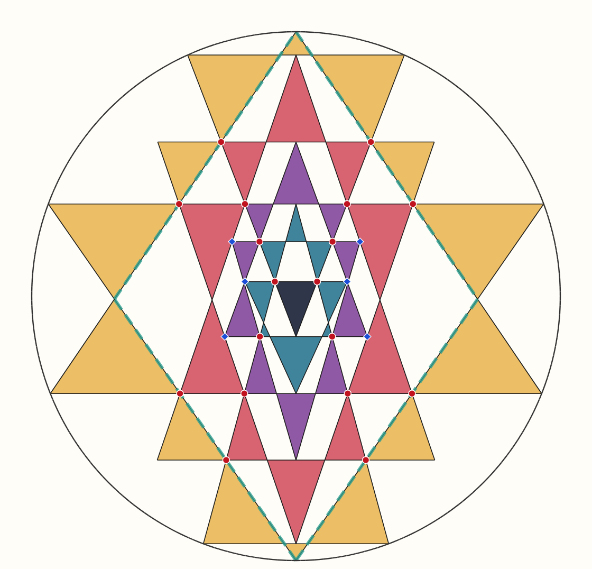
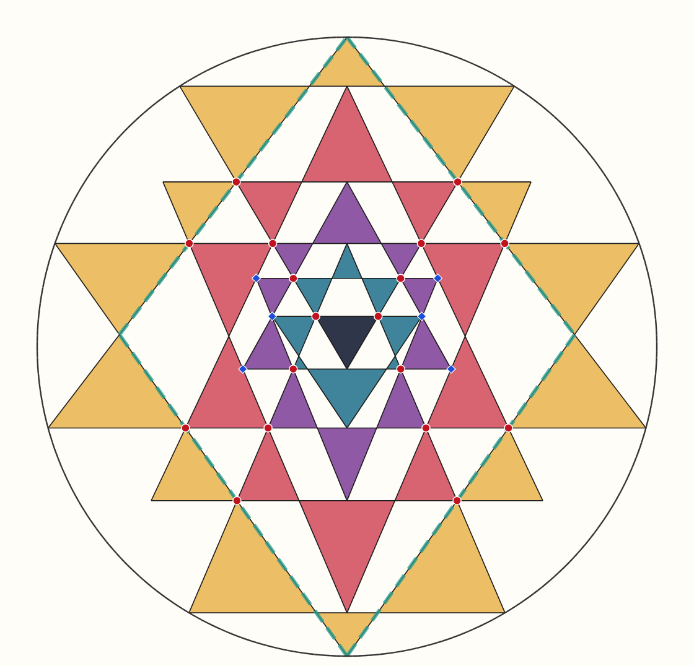
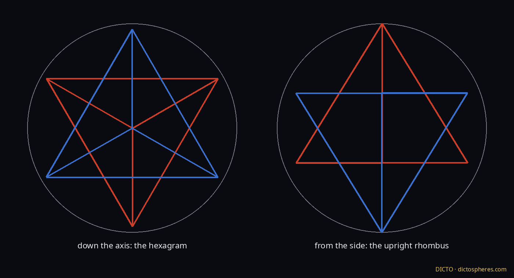
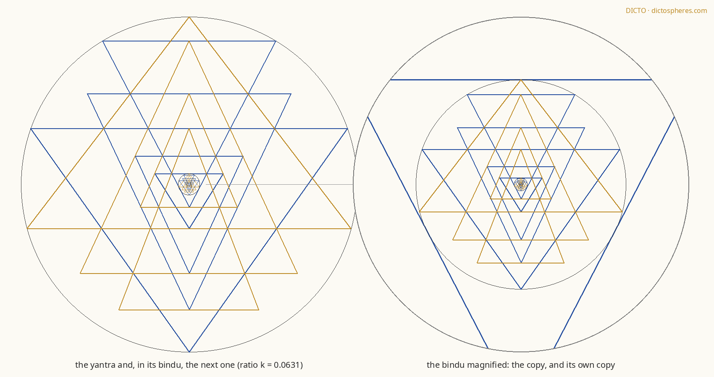
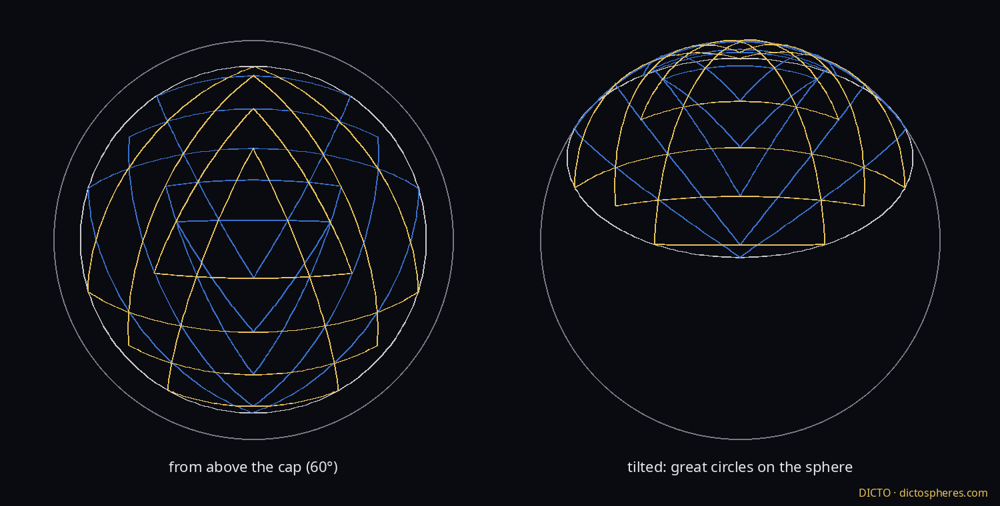
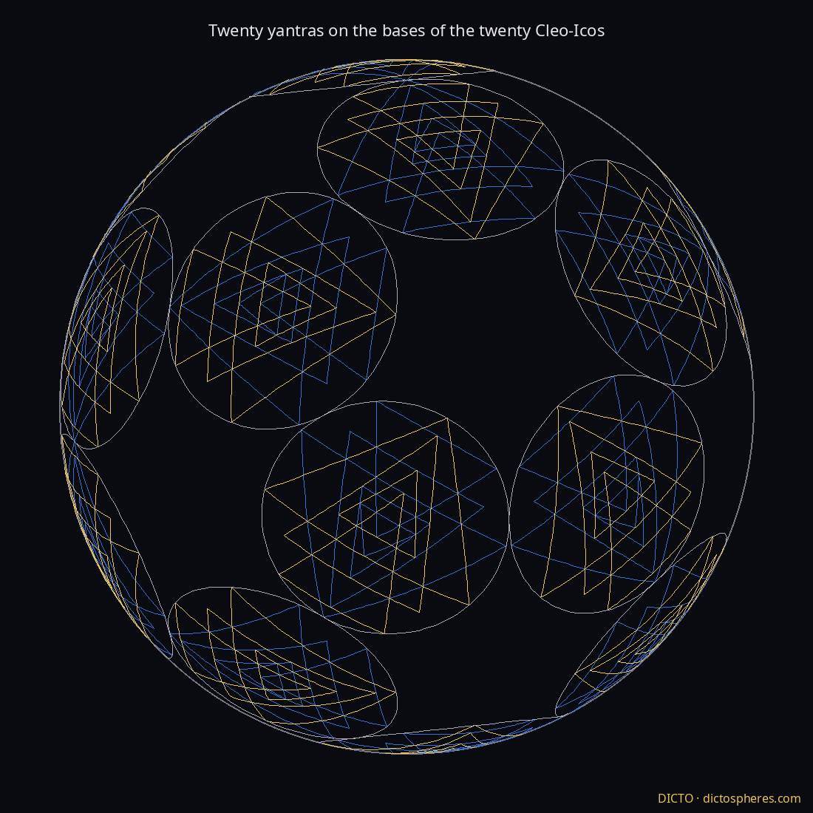

Yantra Gallery The pictures of 8 November, flat, solid and spherical
DICTO · dictospheres.com · 8 November 2026 · Studies 2026-11-08-sri-yantra and 2026-11-08-tetra-yantra.
Gallery for DICTO, not for publication. Names by DICTO: the DICTO Yantra (Cleo-Antonius), the Cleo-Octangula (near-traditional variant).

The DICTO Yantra. The perfect yantra on the Cleo-Antonius: both small triangles on the circle, the bindu centred, 43 triangles, 18 marmas, 24 sandhis.The most even exact yantra. All 18 meetings exact and the traditional 43, with the pieces as equal as the structure allows (more even than Huet's classical); the top and bottom small triangles grow, their corners just inside the circle, as in H. J. T. Matos's painting (DICTO's reference).

The Cleo-Octangula yantra, the near-traditional variant: a Cleo-Icos above, the stella's tetrahedron below.The Cleo-Octangula from the perfect viewpoint: every condition met; the product of the great slopes kept.

The frame. The stella octangula: a hexagram down its axis, the upright rhombus from the side.In three dimensions. Spinning: nine nested cones with the nine meeting circles. Still: the tetrahedra. From one of the three positions: the yantra narrowed to cos 30°.

The gnomon. A copy of the yantra in its bindu, and the copy's own copy: yantras without end.

On the sphere. Every line a great circle; the level bases meet at two opposite points of the equator.

Twenty yantras on the bases of the twenty Cleo-Icos.81. Each Cleo face split into four: eighty DICTO Yantras, the bindu at the centre; five-petalled flowers at the twelve corners.